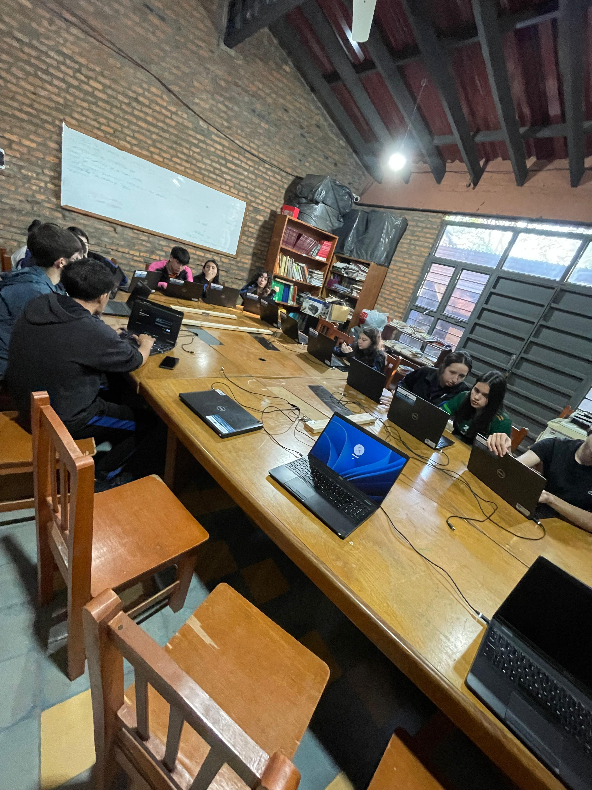
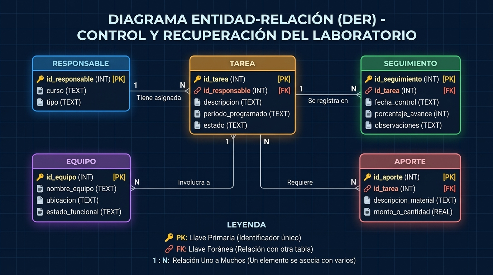
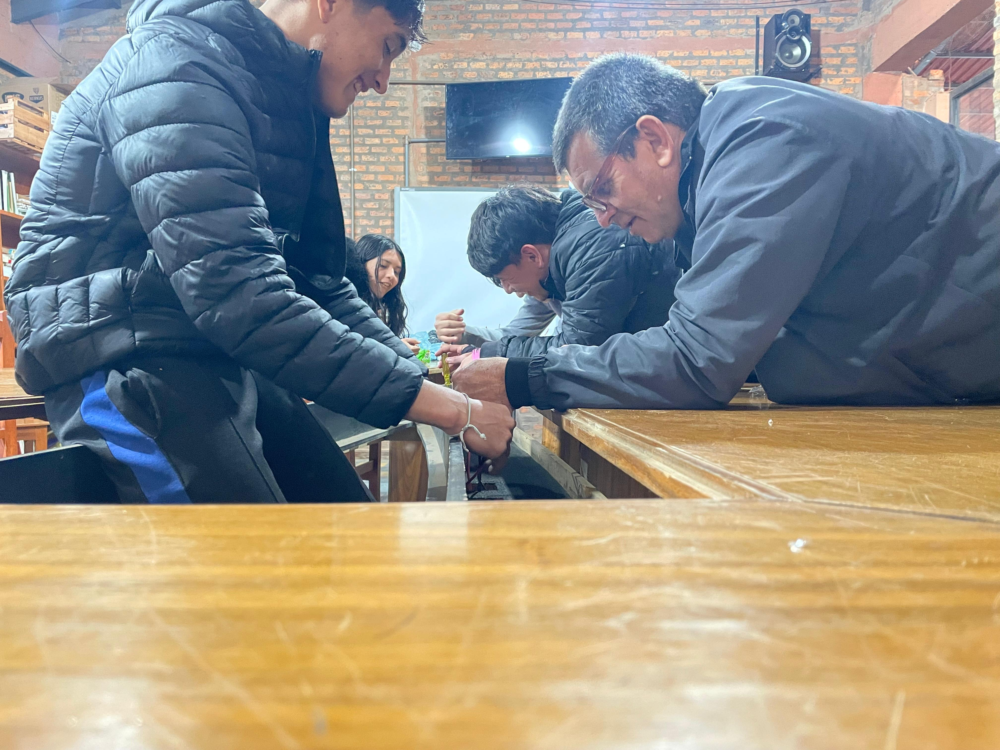
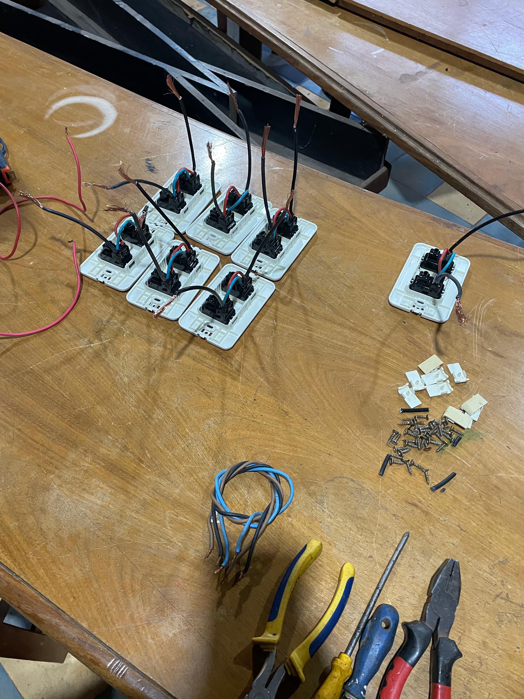
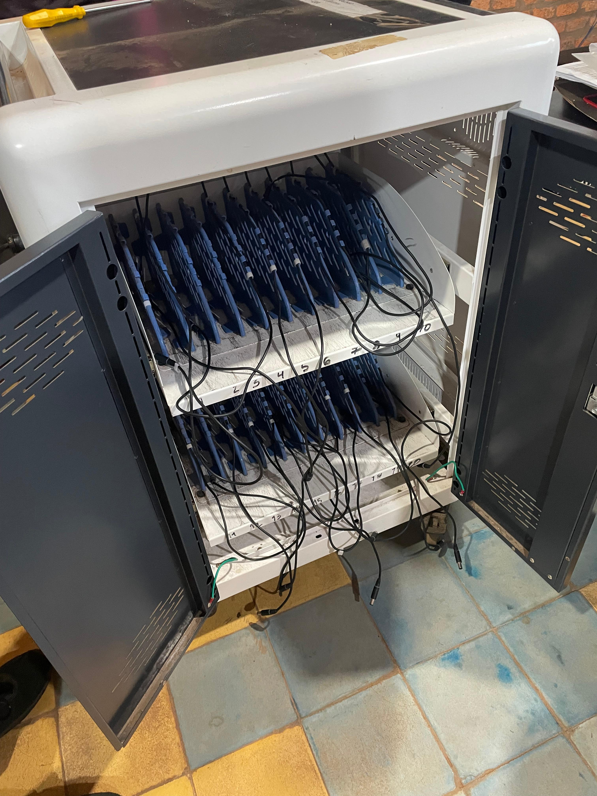
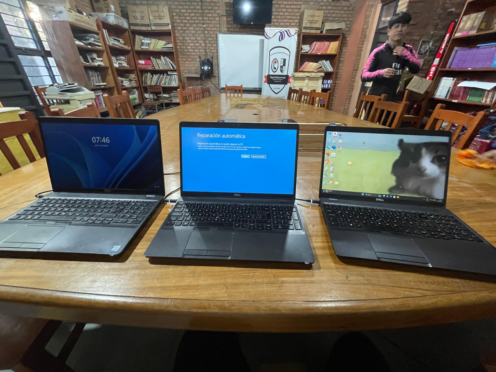

Diagnosticamos, ordenamos y reparamos el laboratorio para que vuelva a ser un espacio seguro y funcional para las clases prácticas.
Centro Educativo Departamental “Miguela Rodríguez Araujo” · Luque, Paraguay

Un laboratorio con equipos fuera de servicio, conexiones deficientes y poco mantenimiento reduce las oportunidades de hacer actividades prácticas con computadoras. El proyecto busca volver a disponer de un espacio informático funcional, ordenado y seguro.
A estudiantes y docentes de la institución que usan el laboratorio, y a los cursos que lo usarán en los próximos años.
Recuperar y reutilizar el laboratorio mediante el diagnóstico, mantenimiento, reparación y organización de los recursos disponibles.
Diagnóstico inicial del espacio y relevamiento de necesidades técnicas y eléctricas.
Planificación y organización: priorización de tareas, asignación de responsables y diseño de la base de datos de seguimiento (SQLiteStudio) como herramienta de apoyo.
Ejecución y cierre: instalación de cableado, colocación de cargadores, soportes de madera para las computadoras, pruebas de funcionamiento y documentación final.
Metodología: Kanban simplificado. Las tareas se clasifican en pendientes, en ejecución y terminadas, y se trabaja por bloques de actividades prácticas.
| Tarea | Estado | Evidencia |
|---|---|---|
| Instalación de cableado | Completada | Mesa funcional y eficiente. |
| Colocación de cargadores | Completada | Cargadores funcionales y eficientes. |
| Soporte para computadoras | Completada | Cada computadora tiene un soporte de madera. |
| Extensión / zapatilla para computadora | Pendiente | Falta comprar las extensiones. |
| Limpieza del laboratorio | Pendiente | Sin fecha programada. |
| Actividad | Prioridad | Estado final |
|---|---|---|
| Diagnóstico de equipos y necesidades | Media | Falta incorporar el inventario de equipos revisados. |
| Soporte y mantenimiento de computadoras | Baja | Cumplido (100 % de avance en el registro). |
| Revisión de conexiones y alimentación | Alta | Pendiente: verificar disponibilidad y seguridad de la extensión. |
| Reparación de fallas detectadas | Media | Cumplido; no se atribuyen reparaciones concretas. |
| Pruebas finales de funcionamiento | Alta | Cumplido: pruebas realizadas en cada equipo. |
| Organización del laboratorio para reutilización | Media | Cumplido. |

Cinco entidades: un responsable tiene varias tareas; cada tarea tiene seguimientos, involucra equipos y requiere aportes. Haz clic en la imagen para ampliarla.
Este proyecto es de gestión e intervención y no requiere programar un sistema, por eso no tiene clases propias. La base de datos se usó solo para registrar tareas, responsables y avances.
Guía para que estudiantes y docentes usen el laboratorio recuperado de forma correcta y sepan qué hacer ante una falla.
Si el equipo no enciende, no muestra imagen o no reconoce un periférico, deja de manipularlo y avisa al responsable. La falla se registra para diagnosticarla y priorizarla.
Versión completa: enlace al Anexo I (completar)
Se anota el problema, el responsable, la fecha, la acción realizada, el resultado y las observaciones. Cuando es posible, se toma una foto antes y otra después.
Se usaron herramientas manuales (como destornilladores), cableado y materiales de organización. La base de datos en SQLiteStudio se usó solo como apoyo de seguimiento; su estructura está en el DER de arriba.

Revisión de la canaleta de las mesas para el cableado.

Instalación del cableado.

Gabinete con los cargadores colocados y numerados.

Pruebas de funcionamiento de los equipos.
Demostración del laboratorio recuperado.
La distribución de tareas y el seguimiento de avances nos ayudaron a organizarnos. Dejamos la instalación de cableado, los cargadores y los soportes funcionando, y también reconocemos lo que falta: comprar las extensiones y hacer la limpieza del laboratorio.
Para un próximo proyecto haríamos desde el inicio un inventario técnico completo, usaríamos una ficha por equipo y tomaríamos fotos antes y después de cada intervención. Para que el laboratorio siga funcionando recomendamos un calendario de mantenimiento preventivo, un inventario actualizado y un procedimiento claro para reportar fallas.
Usamos IA (ChatGPT y Gemini) como apoyo para la documentación, la base de datos y el código de esta página. Cada resultado fue revisado y modificado por el equipo.
Bitácora de prompts: "Hola, necesitamos organizar la base de datos para el proyecto de recuperación del laboratorio en SQLite, pero recuerda que el fuerte del proyecto no es la BD, sino la organización de las tareas de mantenimiento y los equipos. ¿Qué tablas básicas nos sugieres que sean cortas y directas?"
Imput: ¡Hola! Entendido perfectamente. Como la base de datos es solo una herramienta de apoyo para el seguimiento, lo mejor es mantenerla simple. Te sugiero 5 tablas clave: Responsable (para el curso), Tarea (lo que hay que hacer), Seguimiento (el porcentaje de avance y fechas), Equipo (los elementos intervenidos) y Aporte (para materiales como las zapatillas eléctricas pendientes).
· Declaración de autoría: En base a esa repuestas de Gemini se analiso detenidamente las opciones dadas por la IA y se utilisaron para elaborar la base de Datos y el Diagrama DER.
Centro Educativo Departamental “Miguela Rodríguez Araujo”
Luque, Paraguay
Curso: 3º BATIN – Doble turno
Docente tutora: Lic. R. Daniela Ferreira Delgado
Fecha de entrega: 22/10/2026